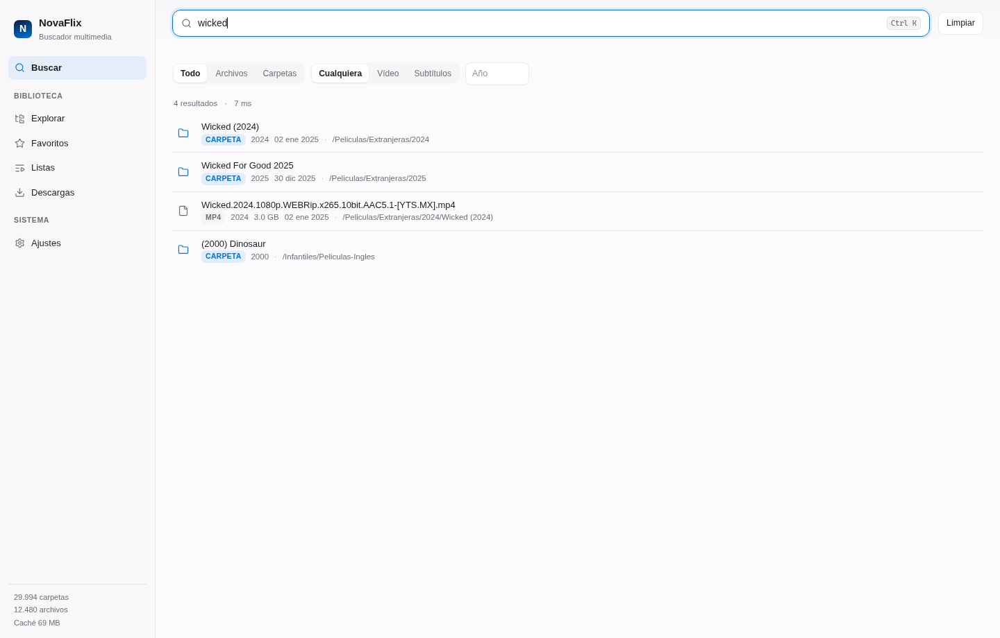
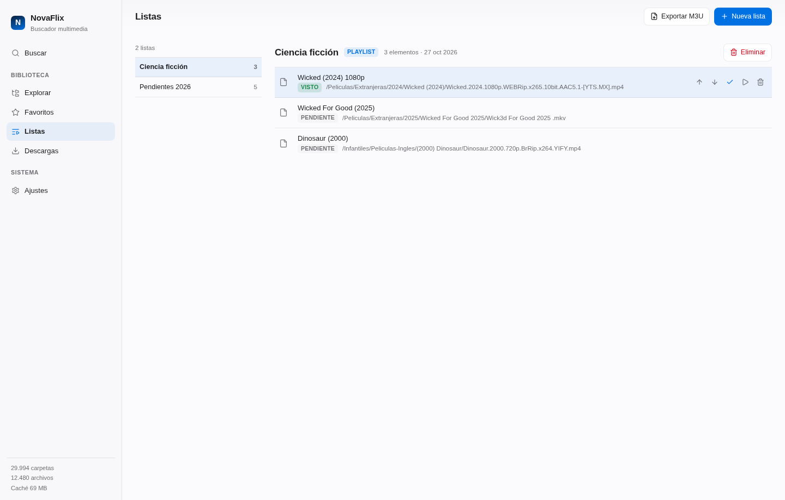

NovaFlix convierte un catálogo multimedia público en una biblioteca privada: búsqueda instantánea, favoritos, listas y descargas reanudables. Sin cuentas, sin telemetría.
Linux · Windows · macOS · Arch — instaladores firmados, paquetes de 4 MB.

Un cliente nativo, no un navegador disfrazado. Todo lo que haces se queda en tu equipo.
FTS5 con normalización leet y prefijos: Wick3d.For.Good.2025.1080p aparece buscando wicked.
30.000 directorios en un segundo desde el árbol publicado. Los archivos se listan al abrir la carpeta.
Tamaños, fechas y caché LRU configurable. El catálogo completo queda a un doble clic.
Guarda contenidos o carpetas enteras. Playlists ordenables y cola de pendientes con estado visto.
Cola, progreso en vivo, reanudación por Range y contadores por cada ruta descargada.
La caché es desechable; favoritos, listas y ajustes viven en una base aparte que nunca se borra.
Elige tu plataforma. Los repositorios se actualizan solos con cada release.
Repositorio APT firmado, actualizable con apt upgrade.
# clave + repositorio
curl -fsSL https://novatic-cu.github.io/NovaFlix/apt/novaflix.gpg \
| sudo gpg --dearmor -o /usr/share/keyrings/novaflix.gpg
echo "deb [signed-by=/usr/share/keyrings/novaflix.gpg] \
https://novatic-cu.github.io/NovaFlix/apt stable main" \
| sudo tee /etc/apt/sources.list.d/novaflix.list
sudo apt update && sudo apt install nova-flix
Repositorio pacman propio, firmado. paru también lo resuelve.
# clave del repositorio (pacman-key no acepta URLs) curl -fsSL https://novatic-cu.github.io/NovaFlix/pacman/x86_64/novaflix.gpg -o /tmp/novaflix.gpg sudo pacman-key --add /tmp/novaflix.gpg sudo pacman-key --lsign-key F005E863F53A70D604479A369FE8FBEF7C2110F0 # /etc/pacman.conf [novaflix] SigLevel = Required DatabaseOptional Server = https://novatic-cu.github.io/NovaFlix/pacman/$arch sudo pacman -Sy novaflix-bin
DMG universal para Apple Silicon e Intel. Sin firmar: primera apertura con clic derecho → Abrir.
brew install --cask novatic-cu/tap/novaflix
Instalador NSIS o MSI. Requiere WebView2 (incluido en Windows 10/11).
winget install Novatic.NovaFlix
Ctrl K abre la búsqueda. Enter abre la carpeta. El resto es lectura.

NovaFlix se distribuye bajo PolyForm Noncommercial 1.0.0: uso personal, educativo, investigación y entidades sin ánimo de lucro. El uso comercial requiere licencia.
Escríbenos y acordamos una licencia comercial, soporte o integración.